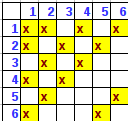

| PolarSPARC |
Introduction to Probability
| Bhaskar S | 07/26/2015 |
Basic Probability
An Experiment is any activity or process, from which there is exactly one possible result or outcome.
An Outcome (also referred to as a Simple Event) is the result (or the thing that can happen) in an Experiment.
A Sample Space (denoted by the letter S) is the set of all possible Outcomes from an Experiment.
An Event (denoted by the letter E) is the subset of Outcomes from the Sample Space.
The Probability of an Event E (denoted by P(E)) is defined as the ratio of the number of Outcomes favorable to E to the total number of Outcomes in the Sample Space S.
In other words,
P(E) = no. of outcomes favorable to E / total no. of outcomes in S
| Example-1 | What is the Probability of getting a 4 on rolling a dice ? |
|---|---|
|
A dice has 6 sides (1 through 6). Rolling a dice can result in any of the 6 numbers. Hence the Sample Space S = 6. There is only one way to get a 4. Hence the no. of favorable outcomes E = 1. The Probability P(E) of getting a 4 is E/S = 1/6 |
|
The following are some of the basic axioms of Probability:
For any event E, 0 <= P(E) <= 1
For the sample space S, P(S) = 1
If P(E) is the Probability for event E to occur, then the probability for the event E to not to occur (denoted by P(E')) is 1 - P(E)
Let us look at a few examples to understand the basics of Probability.
| Example-2 | What is the Probability of getting an Ace from a deck of cards ? |
|---|---|
|
There are 52 cards in a deck of cards. Hence the Sample Space S = 52. There are 4 Aces (Ace of Club, Ace of Diamond, Ace of Heart and Ace of Spade) in a deck of card. Hence the no. of favorable outcomes E = 4. The Probability P(E) of getting a Ace is E/S = 4/52 = 1/13 |
|
| Example-3 | In a class there are 12 boys and 8 girls. If we picked 3 students at random for a spot quiz, what is the Probability that we pick 2 boys and a girl ? |
|---|---|
|
There are (12 + 8) students in the class. The total number of ways in which we can choose 3 students from the class is C203. Hence the Sample Space S = C203. There are 12 boys in the class. We can choose 2 boys in C122 ways. There are 8 girls in the class. We can choose 1 girl in C81 ways. Hence the no. of favorable outcomes E of choosing 2 boys and a girl = C122 * C81. The Probability P(E) of choosing 2 boys and a girl from the class is E/S = C122 * C81 / C203 = 66 * 8 / 1140 = 528/1140 = 44/95 |
|
| Example-4 | A bag contains 2 Blue, 3 Green, and 2 Red balls. If 2 balls are drawn out of the bag at random, what is the Probability that none of the 2 balls is Blue ? |
|---|---|
|
There are (2 + 3 + 2) balls in the bag. The total number of ways in which we can choose 2 balls from the bag is C72 ways. Hence the Sample Space S = C72. We do NOT want Blue balls in the outcome. This means we have 2 balls to choose from 3 Green and 2 Red balls. Hence the no. of favorable outcomes E of choosing 2 balls that are not Blue = C52. The Probability P(E) of choosing 2 balls that are not Blue from the bag is E/S = C52 / C72 = 10/21 |
|
| Example-5 | We roll 2 dice on a table. what is the Probability that the sum of numbers on the 2 dice is a Prime number ? |
|---|---|
|
There are 6 numbers on each dice. The total number of outcomes (sum of numbers) on rolling 2 dice is 6 * 6. Hence the Sample Space S = 6 * 6 = 36. The following table depicts the various combinations of Prime numbers (2, 3, 5, 7, or 11) from the 2 dice:  The no. of favorable outcomes E of getting a Prime number is = 15. The Probability P(E) of the sum of the numbers on the 2 dice to be a Prime number is E/S = 15/36 = 5/12 |
|
Addition Rules Of Probability
Consider two events A and B that are two subsets of events from the sample space S. The events A and B are said to be Disjoint or Mutually-Exclusive events if they cannot occur at the same time.
A example of Mutually-Exclusive events would be an experiment of rolling a dice to get a 3 or a 6.
The following diagram illustrates the Disjoint or Mutually-Exclusive events:
The probability of two disjoint events A or B to occur, is represented as P(A ∪ B) and is the sum of the probability of A and the probability of B.
In other words, P(A ∪ B) = P(A) + P(B).
| Example-6 | A jar contains 5 Green, 4 Red, and 11 Yellow balls. If a ball is selected from the jar at random, what is the Probability that the ball is Green or Yellow ? |
|---|---|
|
There are a total number of (5 + 4 + 11) = 20 balls in the jar. Hence the Sample Space S = 20. Event A is outcome of selecting a Green ball, while Event B is the outcome of selecting an Yellow ball. The no. of favorable outcomes for event A of selecting a Green ball P(A) = 5/20. The no. of favorable outcomes for event B of selecting an Yellow ball P(B) = 11/20. The Probability of selecting a Green or Yellow ball is P(A ∪ B) = P(A) + P(B) = 5/20 + 11/20 = 16/20 = 4/5 |
|
When the events A and B are *NOT* Disjoint (or Mutually-Exclusive) events, then event A or event B or both can occur.
A example of non-Disjoint events would be an experiment of drawing a King or a Spade.
When both the events A and B can occur together (King of Spade in the above example), it is represented by the notation A ? B.
The following diagram illustrates the non-Disjoint events:
The probability of two non-Disjoint events A or B or both to occur, is represented as P(A ∪ B) and is the sum of the probability of A and the probability of B minus the probability of both A and B.
In other words, P(A ∪ B) = P(A) + P(B) - P(A ∩ B).
Why minus P(A ∩ B) ? Because we are counting P(A ∩ B) twice - once with event A and then with event B (look at the diagram above).
| Example-7 | In a class there are 15 boys and 15 girls. In the final exam, 4 boys and 5 girls got an A grade. If a student is chosen at random from the class, what is the probability of choosing a girl or a student with an A grade ? |
|---|---|
|
There are a total number of (15 + 15) = 30 students in the class. Hence the Sample Space S = 30. Event A is outcome of randomly selecting a girl, while Event B is the outcome of randomly selecting a student with an A grade. The no. of favorable outcomes for event A of selecting a girl P(A) = 15/30. The no. of favorable outcomes for event B of selecting a student with an A grade P(B) = 9/30. Realize there are 5 girls who have an A grade. Hence, the probability of selecting a girl with an A grade P(A ∩ B) = 5/30. The Probability of selecting a girl or a student with an A grade is P(A ∪ B) = P(A) + P(B) - P(A ∩ B) = 15/30 + 9/30 - 5/30 = 19/30 |
|
Now extending the concept to three events, the probability of three disjoint events A or B or C to occur, is represented as P(A ∪ B ∪ C) and = P(A) + P(B) + P(C).
The probability of three non-disjoint events A or B or C or a combination of any two or all three to occur, is represented as P(A ∪ B ∪ C) and = P(A) + P(B) + P(C) - P(A ∩ B) - P(B ∩ C) - P(A ∩ C) + P(A ∩ B ∩ C).
The following diagram illustrates the three non-Disjoint events:
Conditional Probability or Multiplication Rule Of Probability
Consider two events A and B that are two subsets of events from the sample space S. The events A and B are said to be Independent events if the occurrence of event A does not affect the occurrence of event B.
A example of Independent events would be an experiment of rolling a dice to get a 3 on the first roll and a 6 on the second roll.
The probability of two independent events A and B to occur, is represented as P(A ∩ B) and is the product of the probability of A and the probability of B.
In other words, P(A ∩ B) = P(A) * P(B).
| Example-8 | A jar contains 2 Blue, 5 Green, 3 Red, and 6 Yellow marbles. A marble is chosen at random from the jar. After putting it back into the jar, a second marble is chosen. What is the probability of choosing a Green and then a Yellow marble ? |
|---|---|
|
There are a total number of (2 + 5 + 3 + 6) = 16 marbles in the jar. Hence the Sample Space S = 16. Event A is outcome of selecting a Green marble, while Event B is the outcome of selecting an Yellow marble. The no. of favorable outcomes for event A of selecting a Green marble P(A) = 5/16. The no. of favorable outcomes for event B of selecting an Yellow marble P(B) = 6/16. The Probability of selecting a Green and an Yellow marble is P(A ∩ B) = P(A) * P(B) = 5/16 * 6/16 = 30/256 = 15/128 |
|
When the events A and B are Dependent events, then the occurrence of event A affects the occurrence of event B.
A example of Dependent events would be an experiment of drawing a King from a deck of cards and without replacing it, drawing a Queen.
The probability of two Dependent events A and B to occur, is represented as P(A ∩ B) and = P(A) * P(B|A).
The notation P(B|A) indicates a Conditional probability of event B given that event A has occurred.
| Example-9 | In a class there are 12 boys and 18 girls. For a Science demonstration, the teacher needs the aid of 2 students. The teacher randomly selects one student to come to the front of the room and then chooses a second student to come to the front of the room. What is the probability that both the chosen students are girls ? |
|---|---|
|
There are a total number of (12 + 18) = 30 students in the class. Hence the Sample Space S = 30. Event A is outcome of selecting a girl student, while Event B is the outcome of selecting another girl student after Event A. The no. of favorable outcomes for event A of selecting a girl student P(A) = 18/30. The student from event A is already in the front of the room. Hence the Sample Space S after event A = 29. The no. of favorable outcomes for event B of selecting another girl student after event A P(B|A) = 17/29. The Probability of selecting both girl students P(A ∩ B) = P(A) * P(B|A) = 18/30 * 17/29 = 306/870 = 51/145 |
|
Let us look at a few examples to understand Conditional Probability.
| Example-10 | In a computer store there are 20 computers of which 3 are defective. If 2 computers are randomly selected and tested, what is the probability that the two are defective, if the first computer is not replaced after being tested ? |
|---|---|
|
There are 20 computers in the store. Hence the Sample Space S = 20. Event A is outcome of selecting the first defective computer, while Event B is the outcome of selecting the second defective computer after Event A (without replacement). The no. of favorable outcomes for event A of selecting the first defective computer P(A) = 3/20. The defective computer from event A is not replaced back into the inventory. Hence the Sample Space S after event A = 19. The no. of favorable outcomes for event B of selecting the second defective computer P(B|A) = 2/19. The Probability of selecting two defective computers P(A ∩ B) = P(A) * P(B|A) = 3/20 * 2/19 = 6/380 = 3/190 |
|
| Example-11 | In a coin toss experiment, a person tosses a coin 4 times. What is the probability that there will be at least 3 heads given that the first 2 tosses are heads ? |
|---|---|
|
A coin is tossed 4 times. Each toss has 2 outcomes (heads or tails). Hence the Sample Space S = 2 * 2 * 2 * 2 = 16 outcomes. Event A is outcome of getting heads in the first 2 tosses, while Event B is the outcome of getting at least 3 heads. The Probability that there will be at least 3 heads given that the first 2 tosses are heads P(B|A) = P(A ∩ B) / P(A) The no. of favorable outcomes for event A of getting heads in the first 2 tosses P(A) = { HHHH, HHHT, HHTH, HHTT } = 4/16. The no. of favorable outcomes for event B of getting at least 3 heads P(B) = { HHHT, HHTH, HTHH, THHH, HHHH } = 5/16. The no. of favorable outcomes for event A and B of getting at least 3 heads with the first 2 being heads P(A ∩ B) = {HHHT, HHTH, HHHH } = 3/16. Hence, the Probability that there will be at least 3 heads given that the first 2 tosses are heads P(B|A) = P(A ∩ B) / P(A) = 3/16 / 4/16 = 3/4. |
|